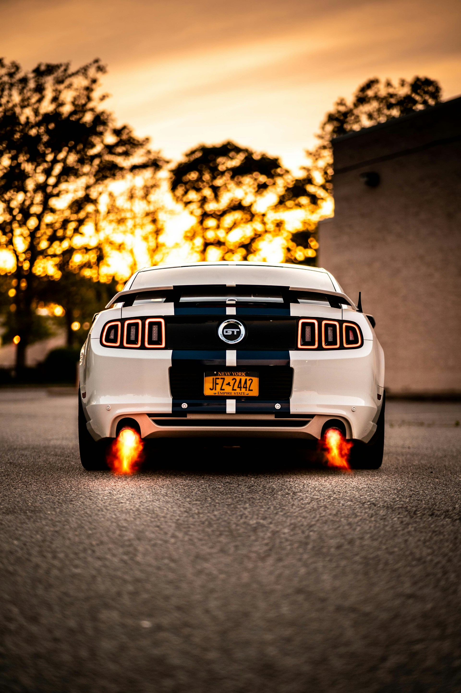
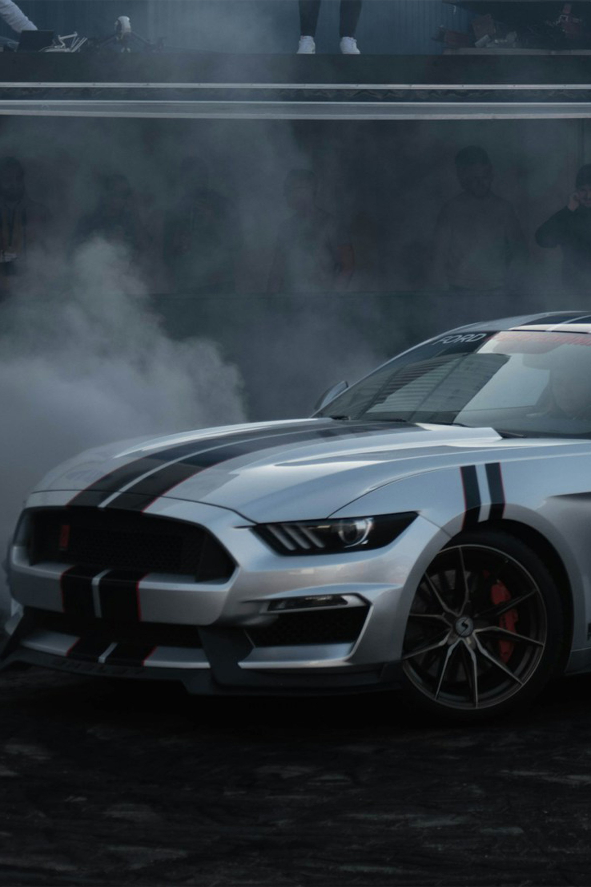

Mustang things
I have always loved Mustangs. They have been my favorite car since a kid. Hopefully you read the storis about my friend and Uncle who were major influences on this love of mine. I am from the Bay Area in Northern California and we area very fond of our Cougars and Stangs. My moms friend when I was a kid and my friend in high-school has cougars.
My friend in high-school was also my radio partner. He would pick me up every morning before I had a car and take me to our show. He had a 3 stage racing transmission in that thing and it was fast. I kept begging him to do a burnout or some donuts but he never would. It was primer black with green shag interior, it was awesome!

